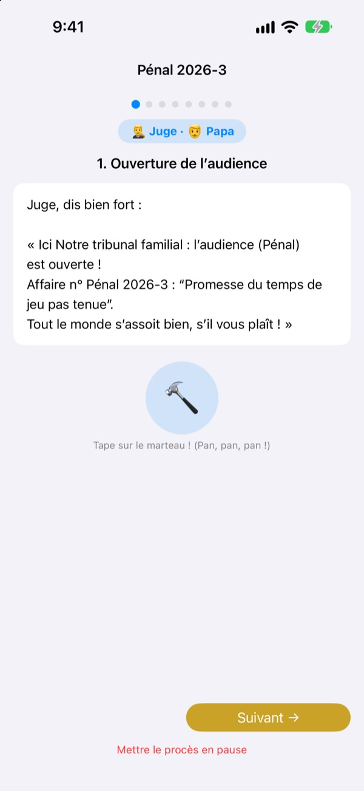
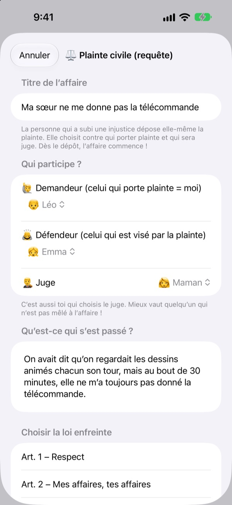
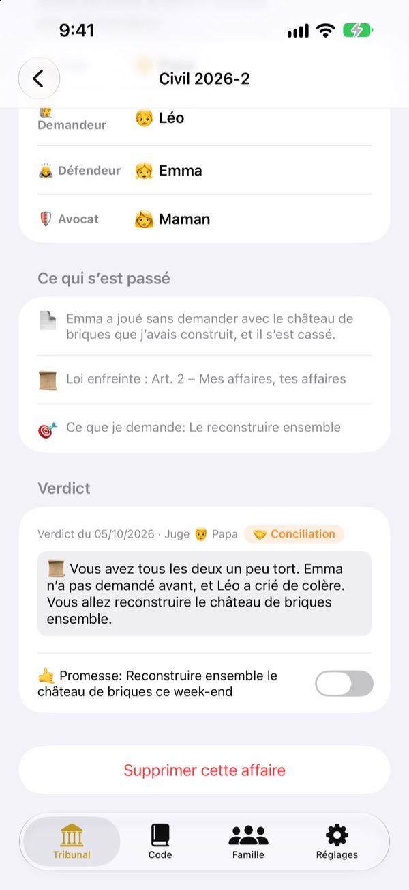
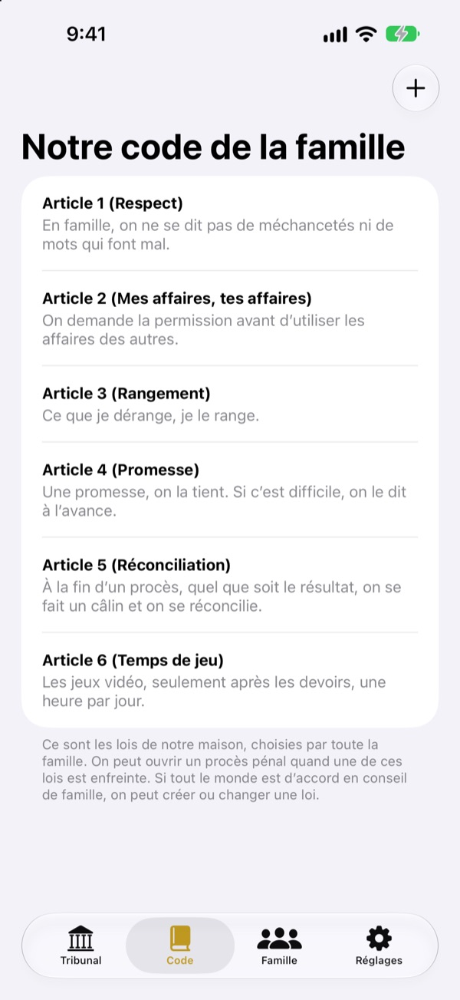

C’est injuste ?
Pas de larmes, on va au tribunal.
Votre enfant dépose lui-même la plainte en tant que demandeur, et la famille se répartit les rôles de juge et d’avocat. À chaque étape, un script indique à qui c’est le tour et quoi dire : même le premier procès se déroule comme un vrai.
Pas de pub, pas d’achat, pas d’inscription. Tout reste sur cet appareil.

Tenez une audience
Une affaire courte : « Mon petit frère ne veut pas me donner la télécommande. » Changez le niveau de vocabulaire en haut, frappez le marteau et lancez le minuteur. Il y a du son, vérifiez le volume.
« C’est lui qui a commencé ! » Fatigué d’être toujours l’arbitre ?
Quand ça se dispute, c’est presque toujours un adulte qui tranche. Le perdant pleure parce que c’est injuste, et le gagnant ne sait pas trop pourquoi il a gagné. Tribunal Familial donne aux enfants un ordre à suivre : raconter toute sa version, puis écouter l’autre jusqu’au bout. Et le verdict se termine par une promesse, pas seulement par une punition.
Celui qui se sent lésé porte plainte lui-même
Celui qui trouve quelque chose injuste devient demandeur et dépose la plainte. Contre qui, et qui sera juge, c’est lui qui choisit. Les enfants peuvent même attaquer papa et maman.
Vous avez vu quelqu’un enfreindre une règle de la maison ? Devenez procureur et lancez une affaire pénale. Seule une personne qui n’est ni demandeur ni défendeur peut être juge.

Le verdict se termine par une promesse
Avec le verdict vient une promesse ou une sanction, que l’on coche une fois tenue. Les affaires terminées deviennent vos propres précédents.
Les idées de sanction commencent par réparer et apaiser, plus proche de la réconciliation que de la punition. Moins de jeux ou de télé, c’est en dernier recours.

Votre maison, vos lois
Écrivez sous forme d’articles les règles décidées ensemble, comme le respect, le rangement ou tenir ses promesses, et ajoutez-en ou modifiez-les quand vous voulez. La plainte cite la loi enfreinte.
« Découvrir le tribunal » explique ce que font le juge, le demandeur, le procureur et l’avocat, et comment se déroule un procès.

Trois étapes pour commencer
- 1
Ajoutez la famille
Un prénom et un emoji suffisent. Pas de compte.
- 2
Déposez une affaire
Injustice : affaire civile. Règle enfreinte : affaire pénale. Puis choisissez un juge.
- 3
Ouvrez l’audience
Suivez le script, gardez le temps avec le minuteur et prononcez le verdict au marteau.
Des mots qui grandissent avec votre enfant
- Juge
- Simple: Arbitre · Tribunal: Président
- Demandeur
- Simple: Celui qui se plaint · Tribunal: Demandeur
- Défendeur
- Simple: Celui qui répond · Tribunal: Défendeur
- Procureur
- Simple: Celui qui a vu · Tribunal: Procureur
- Accusé
- Simple: Celui qui répond · Tribunal: Accusé
- Avocat
- Simple: Celui qui aide · Tribunal: Avocat
- Civil
- Simple: Pas juste · Tribunal: Civil
- Pénal
- Simple: Promesse rompue · Tribunal: Pénal
Choisissez le niveau de vocabulaire dans les Réglages : les mots à l’écran et dans le script changent tous ensemble. Essayez Simple pour la maternelle et Standard pour le primaire.
Questions fréquentes
À partir de quel âge ?
Tout enfant qui sait lire peut jouer avec un parent. Avec le script, les consignes et le niveau Simple, les plus jeunes peuvent participer si un adulte lit à voix haute.
C’est vraiment gratuit ?
Oui. Pas de pub et aucun achat pour débloquer des fonctions. Les Réglages proposent un pourboire facultatif pour soutenir le développeur, qui ne débloque ni ne bloque rien.
Faut-il Internet ?
Non. Les audiences et les dossiers fonctionnent entièrement hors ligne. Il faut Internet et une connexion iCloud seulement pour envoyer un avis depuis les Réglages.
Où sont conservés les dossiers ?
Famille, lois, audiences et verdicts restent uniquement sur l’appareil et ne sont envoyés à aucun serveur. Le développeur ne reçoit que les avis que vous envoyez vous-même et des statistiques d’usage anonymes qui ne vous identifient pas.
Puis-je sauvegarder ou passer à un autre appareil ?
Avec « Enregistrer les données » dans les Réglages, exportez tout dans un fichier, puis « Charger les données » sur l’autre appareil pour tout retrouver à l’identique. Les sauvegardes de l’ancienne version web se chargent aussi.
Ça marche sur iPad ?
Oui, sur iPhone et iPad. Un grand écran est idéal quand toute la famille est réunie autour.
Et si les sanctions deviennent trop dures ?
Quand le procureur demande une sanction, le script rappelle qu’elle doit rester légère et faisable. Les idées de sanction commencent par réparer : rétablir les choses, apaiser l’autre, se mettre à sa place.
Comment tout effacer ?
En supprimant l’app, tous les dossiers de l’appareil disparaissent avec elle. Rien n’en est jamais sorti, donc rien ne reste ailleurs. Pour effacer un avis envoyé, écrivez-nous.
Bug, idée ou autre chose ? Écrivez à leeo@kakao.com. Vous pouvez aussi envoyer un avis depuis les réglages de l’app.